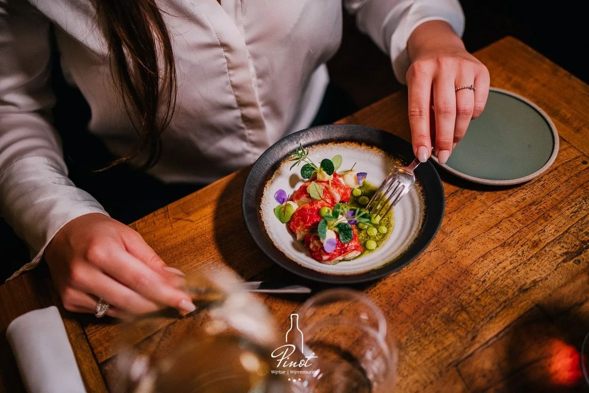
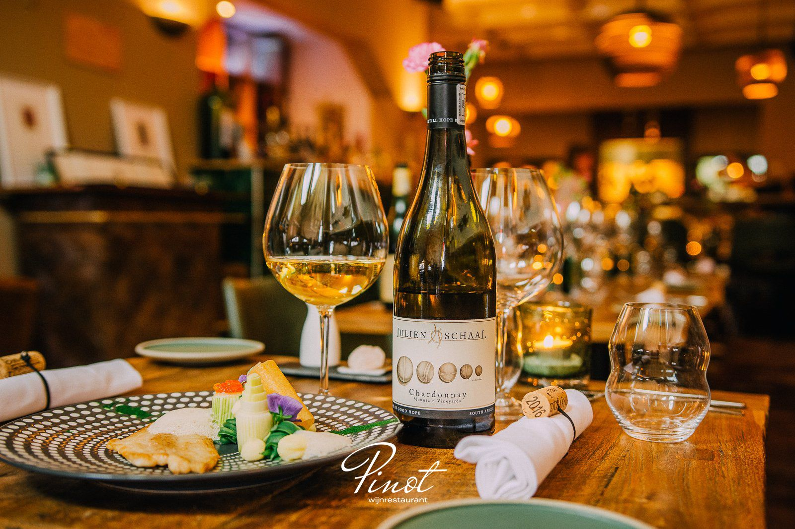
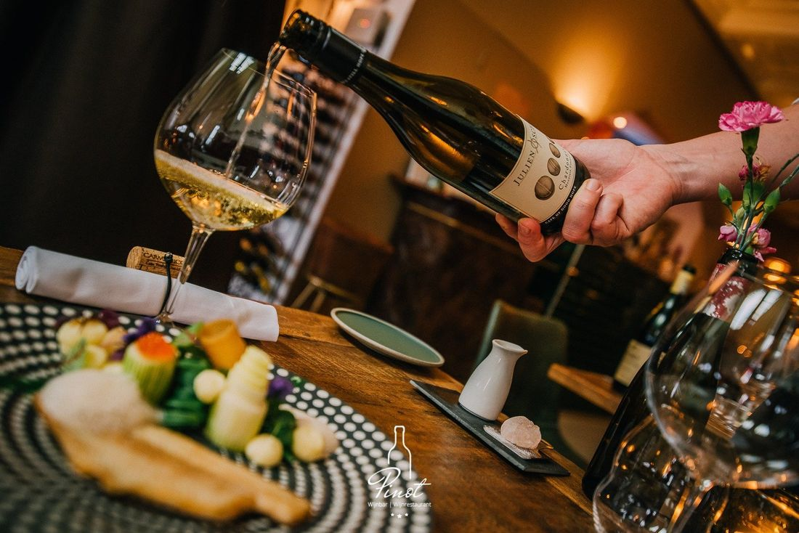
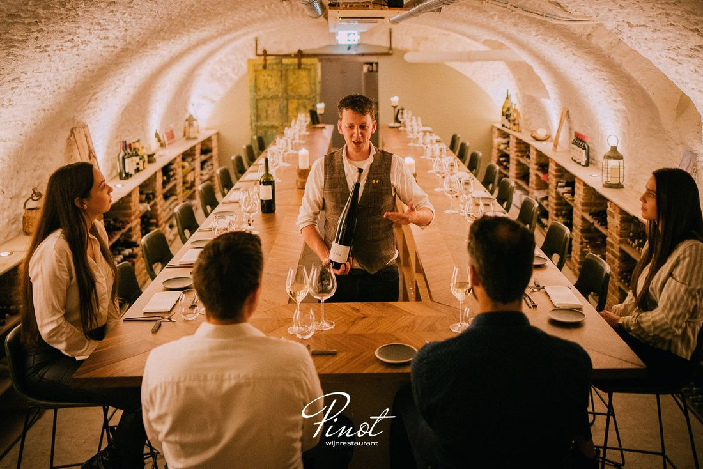
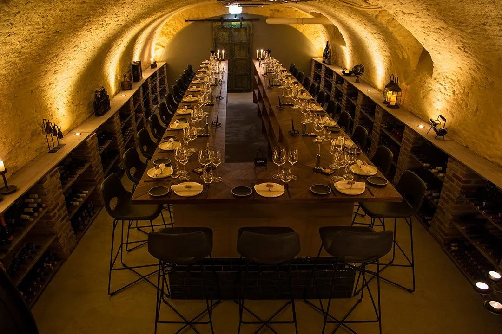
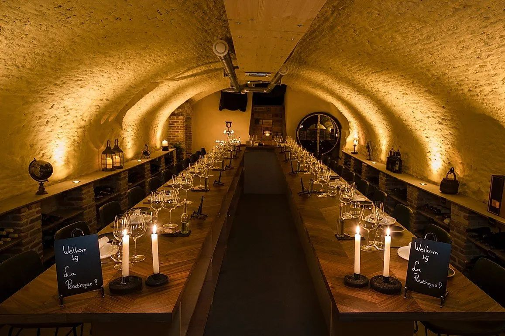
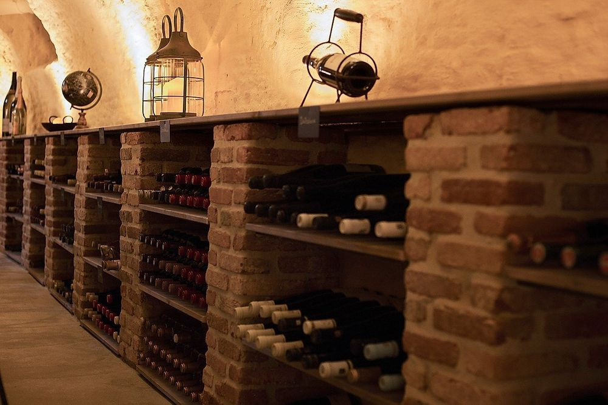
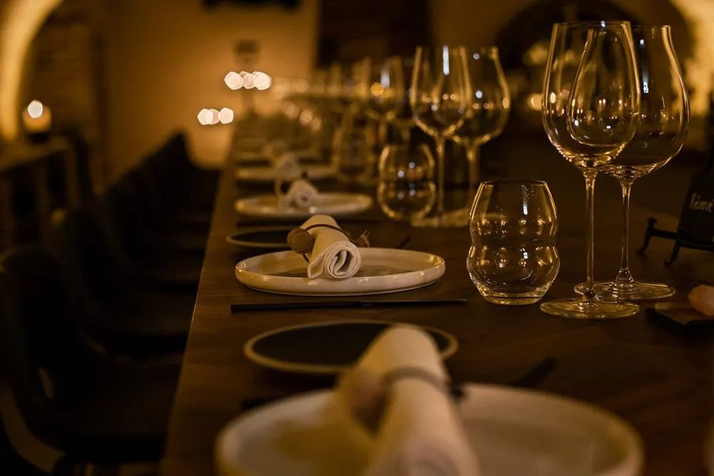
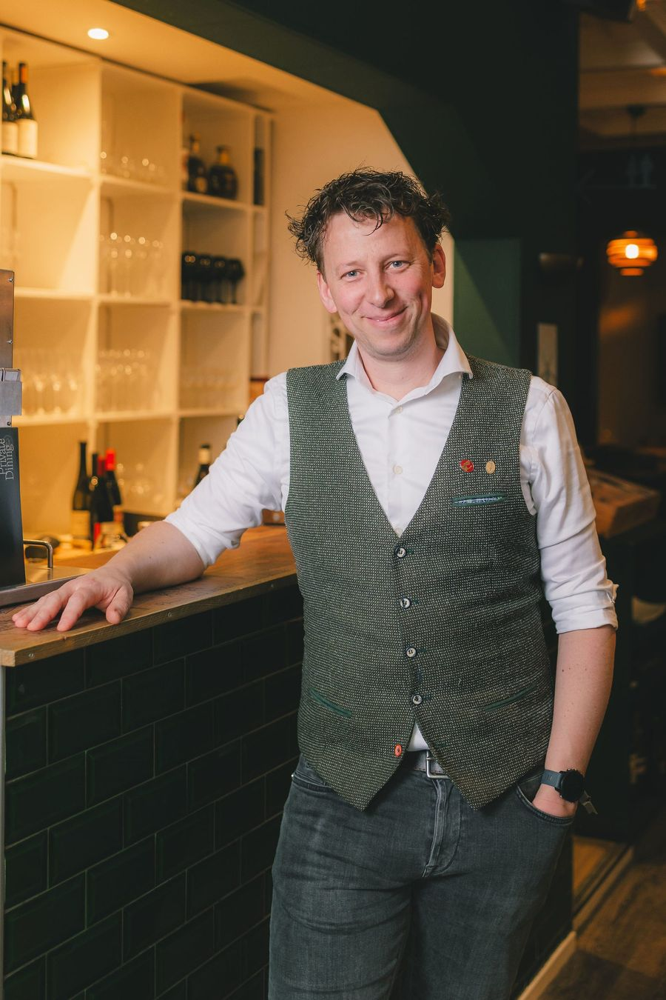

Diner
3, 5 of 7 gangen, met bij elk gerecht een bijpassende wijn.
Vanaf € 49 p.p.Meer info

Onze sommeliers kiezen bij elk gerecht een wereldse wijn en vertellen er graag over. Met uitzicht op de Grote Kerk in Breda.
"Culinair hoogstandje met excellente wijn-spijs"Nathalie W. via Tripadvisor
Een uitgebreid diner, een High Wine op zaterdagmiddag of een proeverij in onze kelder. Bij Pinot kunt u alle kanten op.

3, 5 of 7 gangen, met bij elk gerecht een bijpassende wijn.

5 halve glazen wijn met bijpassende hapjes, op zaterdag en zondag.

10 wijnen rond één thema, met 5 hapjes en uitleg, in onze wijnkelder.

De kelder voor uw eigen gezelschap, tot 30 personen.



Onder de Grote Markt ligt onze opgeknapte gewelvenkelder, met plaats voor 1500 wijnflessen. Hier geven we proeverijen, WSET-wijncursussen, wijnmakersdiners en wijn-spijsavonden.
U kunt de kelder ook afhuren voor uw eigen gezelschap: een verjaardag, jubileum, bruiloft, personeelsuitje of zakelijke bespreking. Alles bij Pinot is maatwerk, dus we denken graag met u mee.
"Al vanaf het begin m'n lievelingsrestaurant hier in de regio."Lynn L. via Google
"Ontspannen ambiance met verrassende gerechten en bijpassende wijnen"Erik Jan B. via Tripadvisor
"Zeker doen: High Wine bij Pinot!"Loni V. via Tripadvisor
"Aanrader voor liefhebbers van wijn en lekker eten"Remy S. via Tripadvisor
"Alles goed: gerechten, wijn, sfeer, service, flexibiliteit"nemelaer via Tripadvisor
"Culinair hoogstandje met excellente wijn-spijs"Nathalie W. via Tripadvisor

Pinot is sinds 2014 het wijnrestaurant van Martijn Roos en Kelly Roos-Koutstaal. Samen met chef-kok Christian Jongmans, de keukenbrigade en ons team van sommeliers maken we van een avond uit een beleving.
"Met gasten hun smaak ontdekken en ze wegwijs maken in de wereld van wijn is voor mij het mooiste wat er is. En waar begin je op die reis? Met een glas bij Pinot!"
Martijn Roos, eigenaar & sommelier
Voor een diner, High Wine of tasting. Vragen beantwoorden we het liefst per e-mail, zodat we tijdens openingstijden onze aandacht bij de gasten houden.
Parkeren voor de deur kan niet. P Barones, P Beyerd en P Prins liggen op loopafstand.